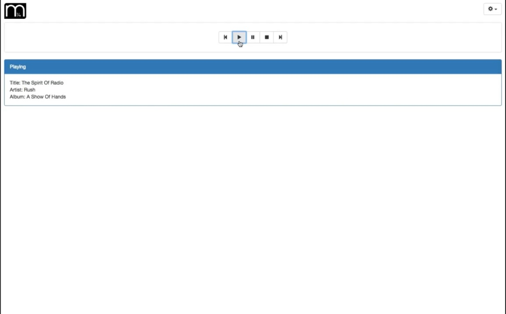
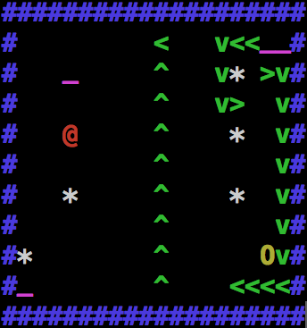

I'm Andrew Bowler, and welcome to my website. I'm currently a senior attending Iowa State University pursuing a Bachelor's in Software Engineering.
My professional interests include but are not limited to web development (JavaScript libraries I find most interesting), computer graphics, video game development, and music technology.
My personal interests consist of video games, guitars, music, delicious and unhealthy food, cats, and hilarious things on the Internet.
I have lots of experience working with Java and HTML/JavaScript, and have done some work in C/C++ and SQL as well.
I have also had the opportunity to work with some fantastic frameworks and APIs such as React, WebGL, Three.js, and Node!
Industry Skills
I have development experience mostly consisting of enterprise-scale applications and front-end web development, though my passion is developing software that the average person can use, such as myself!
I also have experience developing in both Waterfall and Agile environments. I have also taken on roles such as Scrum Master and Repository Manager!
Professional Experience
I previously had an internship with Principal Financial Group as an Application Developer during Summer 2014, and developed enhancements for an app configuration tool for the company's many development teams.
My team also won 1st prize for the annual Intern Code Jam!
I worked at Principal once again during the second half of Summer 2015 after I finished my study abroad. This time I worked on a scaled agile team developing IT apps and database utilities.
I am currently seeking full-time employment in the software industry!
Music
I have been an electric guitarist for 8 years, participating in all music groups in high school, and continue practicing as an active musician (when time permits!) I will be posting my work in the near future - unfortunately music software and equipment are never cheap. My style is focused on hard rock, though I have played jazz and accompanied orchestral music as well.
For music inquiries feel free to contact me at my email address.
My Projects
Click on one to learn more

M14 is an Internet browser client that streams music from an MPD server you provide (for you Linux users!) Control your server as you see fit, then you can stream the music from any device, anywhere! Whether your iPod's dead or you don't have access to your main computer, you'll never be without your music again!
This project gave me the opportunity to learn ReactJS and Node, as well as how to setup a basic REST service.

Super Stolee Bros. was a class project written in C++, essentially a Pac-Man clone. Our professor wrote the game board and scoring logic, then instructed us to write the AI for each actor. I wrote the AI for the hero, the enemies, and even the powerups as they try to make the enemies win!
Jamory is my current personal project. It's a mobile app that allows you to play and save bits of musical composition on the fly, whether you're jamming on an instrument, creating melodies in your head, or even just making a drum pattern with the turn signal. Save those precious sparks of musical genius, and you may soon have a masterpiece!
Music
Currently on the back burner due to school/lack of steady income, but in the future I will be uploading guitar covers after I purchase proper recording equipment. Check back down the road!
In the meantime here's a composition I wrote for a music technology class a while back. Apart from the bass mix, I'm quite proud of it.